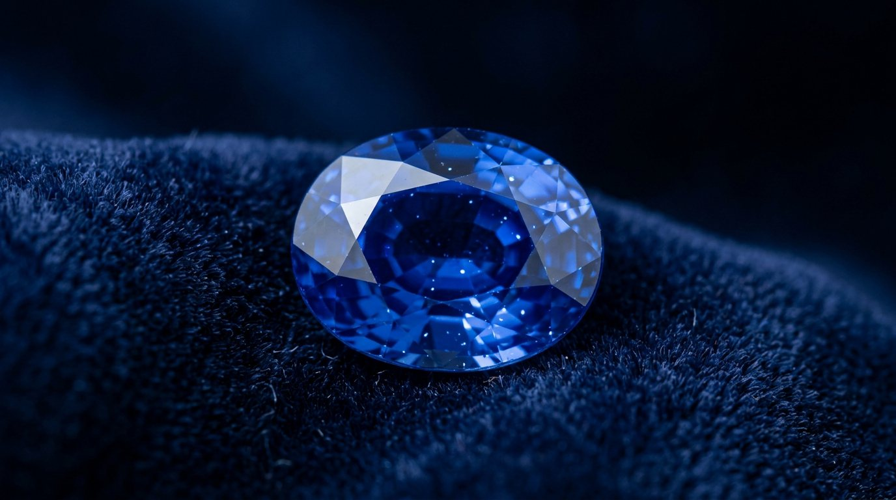
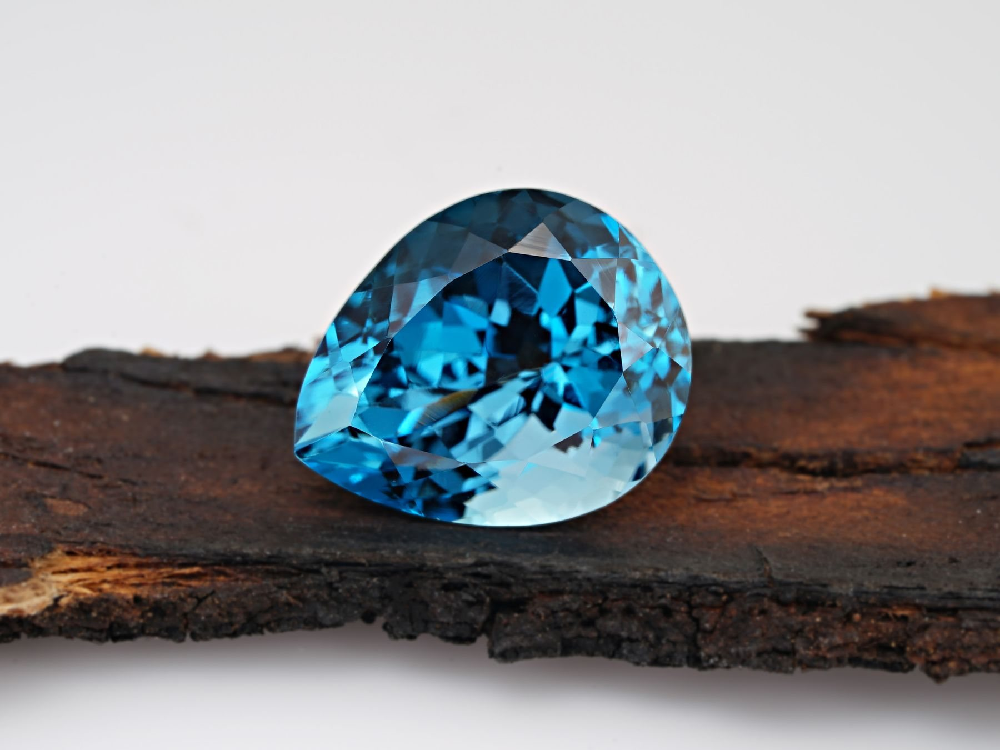
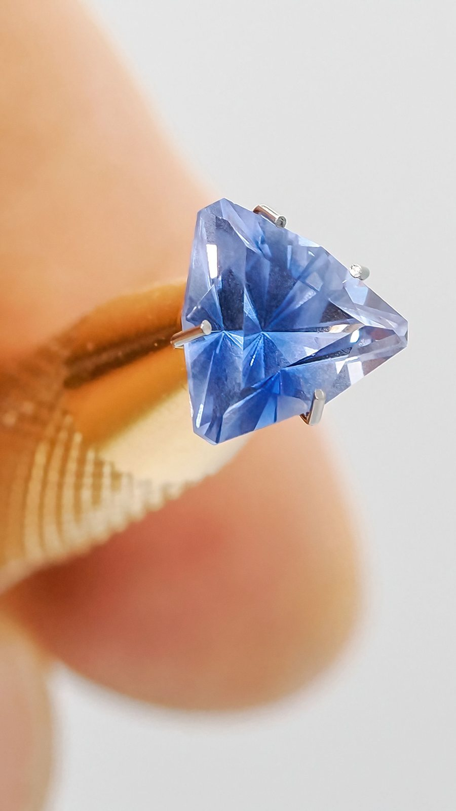

Ceylon sapphires · Since 1962
Bornblue
Sapphires mined by hand in Ratnapura, Sri Lanka’s gem country, then cut and set in our Colombo atelier.
✦Move to catch the light
Every Nīla piece is made around a single stone, chosen in Ratnapura and cut in Colombo. When that stone is gone, the piece is gone with it.
The collection
Three stones · on request

Provenance
From river gravel to your hand
Four pairs of hands touch every stone. Scroll to follow one from the pit to the setting.
Mined
Gem gravel is lifted from shallow pits by small family crews, washed in woven baskets until the heavy crystals settle.
Sorted
Each rough stone is judged by colour and clarity under daylight. Fewer than one in fifty goes on to be cut.

Cut
Our cutters study a stone for days before the first facet, chasing the deepest blue rather than the biggest carat.
Set
Platinum or gold, built by hand around that one stone, then finished and signed in the atelier.
Why Ceylon
The blue the world asks for
- 9On the Mohs scale, second only to diamond, so a sapphire lasts for generations.
- 2000Years and more that Sri Lanka has been trading sapphires with the world.
- 1Stone per piece. No two Nīla pieces are ever the same.
Colombo atelier
A private viewing
An hour with our gemmologist, a tray of loose stones and a cup of Ceylon tea. Bring a design, or just a feeling for a colour.